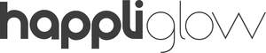

Trade Mark Journal No.2025/025 20 June 2025
UK00004216158 9 June 2025 (8,10,11)

- Class 8
- Hair styling appliances; electric hair straighteners; hair straightening irons; flat irons; curling irons; hair clippers; hair trimmers; electric shavers; razors; electric razors; beard trimmers; nasal hair trimmers; electric ear hair trimmers; hair cutting and removal implements; knives; scissors; parts and fittings for all of the aforesaid goods.
- Class 10
- Apparatus for treatment of the skin for cosmetic and medical use; light therapy masks for cosmetic and medical use; skin enhancement apparatus; laser apparatus for treatment of skin; massage apparatus and instruments; apparatus and instruments for cosmetic therapy; apparatus for the treatment of the skin; apparatus and instruments for stimulating hair growth; sexual stimulation devices; electro-therapy apparatus and instruments; electrical apparatus for stimulating muscle movement; electrical apparatus used to aid weight loss; laser apparatus for cosmetic and medical use; microdermabrasion apparatus; dermaplaning and exfoliating apparatus; oral irrigators; massagers; massage appliances; body massagers; foot massagers; scalp massagers; heat treatment apparatus; heat pads for therapeutic treatment; heat wrap massage apparatus; parts and fittings for all of the aforesaid goods.
- Class 11
- Appliances for drying hair; hair dryers; hair steamers; facial steamers; steam facial apparatus; foot spas; electric foot baths; parts and fittings for all of the aforesaid goods.
AO World PLC
Representative: Wilson Gunn